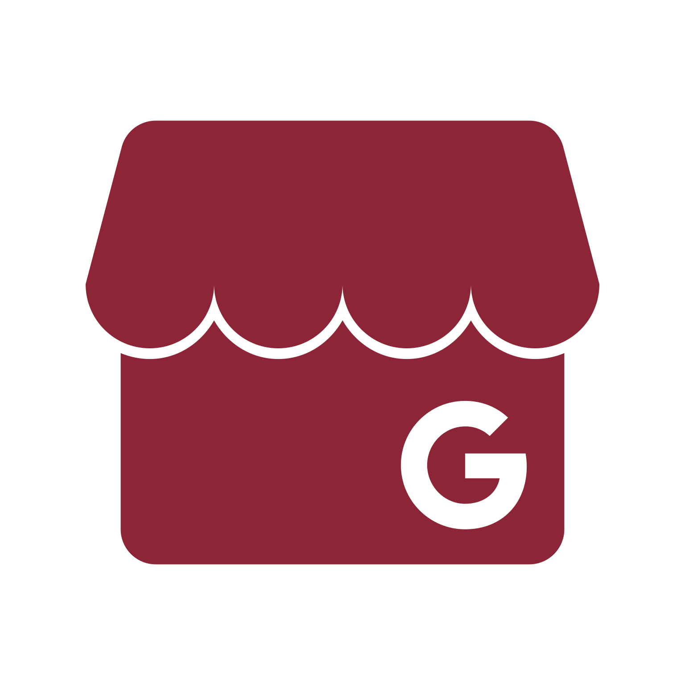

01
Descubrimiento
El paciente ve un anuncio segmentado o busca un especialista local en Google cuando siente la necesidad de un tratamiento.
Canales clave


Conectamos publicidad, presencia digital y atención comercial para ayudar a que más personas interesadas terminen agendando una cita.
01 / El problema real
Muchos centros de estética, clínicas y consultorios independientes invierten en publicidad o publican a diario en Instagram, pero su agenda sigue teniendo huecos libres. La causa es simple: entre el primer anuncio y la cita confirmada existe una cadena de pasos. Si un solo tramo falla, el paciente interesado termina agendando en otro lugar.
El paciente ve un anuncio segmentado o busca un especialista local en Google cuando siente la necesidad de un tratamiento.
Antes de escribir, revisa tu perfil de Instagram, casos reales, opiniones en Google y presentación para confirmar tu profesionalismo.
Da el paso y hace clic para consultar directamente por WhatsApp o solicita información mediante la página web.
Recibe respuesta ágil, resolución de dudas y presentación clara del valor de la valoración antes de hablar de tarifas.
Cita agendada en calendario, recordatorio previo para evitar inasistencias y llegada puntual al consultorio.
02 / Arquitectura del método
No creemos en acciones aisladas ni en publicar por publicar. Cada dimensión cumple un propósito concreto dentro de tu negocio, y al operar juntas garantizan un flujo constante de pacientes calificados.
Pauta digital segmentada
Operamos campañas de publicidad en Meta Ads y Google Ads dirigidas a personas con interés real en tratamientos específicos (toxina botulínica, ácido hialurónico, bioestimuladores o aparatología corporal).
Filtramos por radio geográfico en tu ciudad para atraer prospectos con cercanía e intención real de consulta, evitando curiosos sin presupuesto.
Búsqueda local y reputación

Perfil GoogleCuando alguien busca un centro de estética o especialista en su ciudad, ya tiene alta intención de compra. Maximizamos la presencia de tu clínica en Google Maps y Google Business Profile con información verificada y sólida.
Optimizamos categorías, horarios, fotos de instalaciones y gestionamos reseñas reales para que tu negocio aparezca como la opción más confiable de la zona.
Criterio y credibilidad médica
En salud y estética, el contenido no sirve para ganar "me gusta" pasajeros: sirve para resolver dudas y construir autoridad antes de que el paciente haga su primera consulta.
Estructuramos guiones y formatos que muestran el criterio ético del profesional, aclaran mitos sobre los procedimientos y diferencian a tu clínica por calidad y no por descuentos agresivos.
Canales de contacto y filtro
Canalizamos el interés del paciente hacia páginas web limpias o enlaces directos a WhatsApp. Diseñamos puntos de contacto sin fricción para que el usuario entienda qué tratamientos realizas y cómo agendar su valoración en segundos.
Integramos analítica técnica para saber con certeza qué canal, anuncio y tratamiento generan pacientes reales en agenda.
Atención comercial y cierre
Es la etapa donde más dinero suelen perder los centros estéticos. Acompañamos a tu equipo de recepción con guiones para responder la pregunta "¿precio?", filtros consultivos y secuencias de seguimiento.
Reducimos las cancelaciones de última hora y reactivamos a personas que consultaron semanas atrás pero no habían agendado.
03 / Diagnóstico de puntos críticos
La mayoría de centros de estética, consultorios y profesionales independientes sufren una de estas cuatro fugas comerciales. Identificar cuál frena tu negocio permite corregirla con precisión.
Fuga 01 · Demanda insuficiente
Dependes únicamente del voz a voz o de publicaciones esporádicas en Instagram. Cada mes empieza con incertidumbre sobre cuántos pacientes nuevos llegarán a la clínica.
Fuga 02 · Falta de protocolo comercial
El equipo de recepción responde entregando una tarifa en seco, sin explicar el valor de la valoración médica ni hacer preguntas para entender la expectativa de la persona.
Fuga 03 · Percepción digital débil
El paciente investiga al profesional en internet antes de escribir. Si encuentra una ficha descuidada o perfiles sin credenciales médicas claras, agenda con la competencia.
Fuga 04 · Ausencia de seguimiento
Pacientes con interés real quedan olvidados porque nadie vuelve a escribirles. En estética, más del 30% de las valoraciones se cierran en el segundo o tercer contacto.
04 / Criterio de priorización
No aplicamos fórmulas rígidas ni te pedimos contratar lo que tu clínica aún no requiere. Nuestro proceso de evaluación comercial se divide en tres pasos simples:
Analizamos de dónde provienen tus pacientes hoy, qué tratamientos te generan mayor rentabilidad, qué canales tienes activos y cómo gestiona tu equipo las consultas en WhatsApp.
Detectamos con exactitud si tu urgencia es generar más volumen (captación), construir mayor credibilidad previa (posicionamiento y contenido) o cerrar más citas (conversión y seguimiento).
Te recomendamos la modalidad más rentable: un acompañamiento integral mensual si buscas delegar el crecimiento, o un servicio puntual si solo necesitas solucionar un activo específico.
Revisa cómo se traduce esta evaluación en planes mensuales y soluciones individuales.
Ver Planes y Servicios05 / Casos verificados
Hemos implementado esta metodología con consultorios independientes, clínicas de medicina estética y centros de estética integral en Colombia.
Pasó de depender del tráfico peatonal a estructurar un flujo constante de reservas semanales para masajes y estética facial mediante Meta Ads y atención comercial en WhatsApp.
Posicionamiento de tratamientos faciales de alto valor y consolidación de agenda mediante campañas dirigidas y guiones estructurados para recepción.
Captación de pacientes con intención real de procedimiento en Google y Meta, elevando la autoridad digital y el flujo de consultas calificadas.
Conoce los detalles de implementación, antes y después, y métricas de cada proyecto.
Explorar casos y resultados06 / Modalidades de trabajo
Adaptamos nuestra forma de trabajar a las necesidades y recursos reales de tu clínica, con total claridad en el alcance:
Modalidad A · Acompañamiento Continuo
Para clínicas y consultorios que quieren un equipo especializado operando su captación, posicionamiento, contenido y optimización comercial mes a mes.
Modalidad B · Solución Puntual
Para negocios que ya tienen un flujo comercial activo pero necesitan resolver un activo técnico o estratégico concreto sin un contrato mensual recurrente.
Diagnóstico sin costo
Revisamos tu presencia digital, tus tratamientos principales y tu proceso de atención en WhatsApp para decirte con honestidad cuál es tu cuello de botella y por dónde conviene empezar.